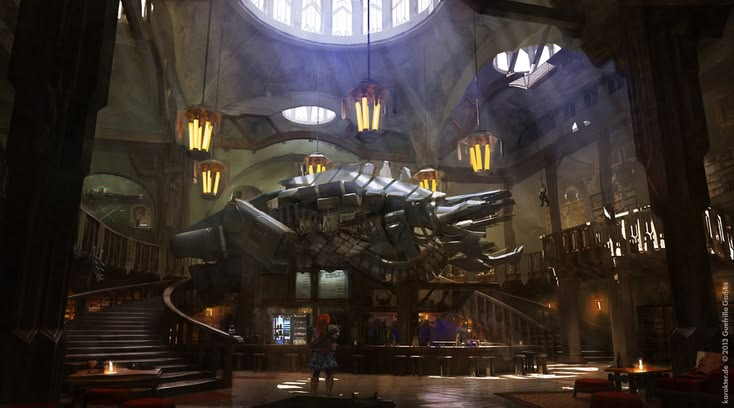

Logia de cazadores
Eres aventurero,temerario y crees que las marcas tienen valor?demuestralo en la logia,donde deberas demostrar tus habilidades en la caza de las maquinas salvajes pero no de cualquiera aqui se lucha en grande!
Te enfrentaras a verdaderos retos luchando contra las de renombre,aquellas que han acabado con otros cazadores o hecho de Meridian su lugar de residencia permanente.
No te desanimes!Si lo logras serás parte de logia.
Aviso importante:Podrias no volver para contarselo a tus amigos.
